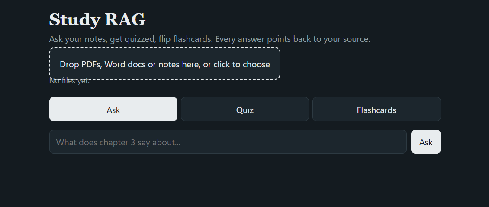

Study RAG: AI Study Partner
A small web app that turns your own study materials into a study partner. Upload PDFs, Word documents or text notes, then ask questions and get answers with citations, take multiple-choice quizzes, or flip through flashcards, all generated from your own material.

Features
- Ask with citations: answers use only the uploaded material, with numbered sources pointing to the file and page or heading.
- Quiz mode: multiple-choice questions with instant feedback, explanations and a running score.
- Flashcards: flip cards generated from the material, with an optional topic focus.
- Mixed formats: PDF, Word (.docx), .txt and .md.
- Saved index: upload once and the index is stored on disk for next time.
How it works
- Ingest: extract text from each file and split it into chunks of about 180 words with a 30-word overlap.
- Embed: convert each chunk to a vector with the local all-MiniLM-L6-v2 model (sentence-transformers).
- Retrieve: embed the question and select the 6 chunks with the highest cosine similarity using NumPy.
- Generate: pass the chunks to Google Gemini as numbered sources, with a prompt that keeps the answer grounded and cited.
What I learned
- How RAG fits together end to end: chunking, embeddings, similarity search and prompt design.
- Handling real API failures (404, 503 and 429) with readable error messages and automatic retries.
- Keeping secrets in environment variables and personal data out of version control.
- Debugging methodically, such as finding a stale server still answering on the same port.
Tech Stack
Python, Flask, pypdf, python-docx, sentence-transformers, NumPy, Google Gemini API, HTML/CSS/JavaScript
View the code on GitHub
← Back to Portfolio